These are commands available in the
command loop of the model checker,
in addition to the normal Erlang
functions.
-
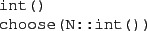
Chooses the corresponding
transition to compute the next state.
-
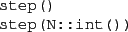
Executes N computation steps.
-
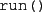
Runs the program until it halts.
-
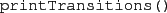
Shows all transitions from the current state.
-
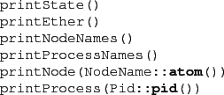
Prints different components of
the current state.
-
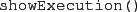
Show the complete run starting from initial state to the final state.
-
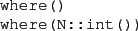
Shows the execution context (the last N stack frames).
-
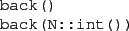
Moves the ``stack pointer'' towards the beginning of the program execution.
-
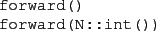
Moves the ``stack pointer'' towards the end of the program execution.
-
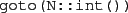
Moves the stack pointer to stack frame N.
-
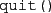
Leaves the debugger.
2010-07-05